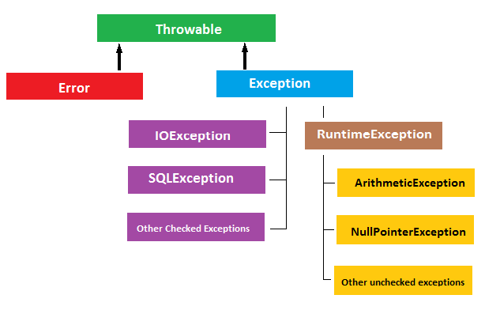
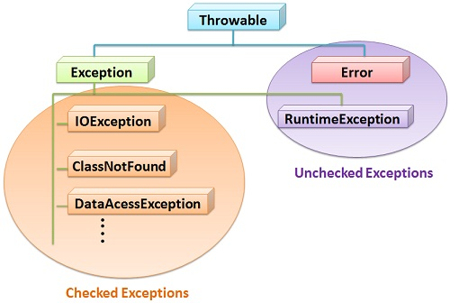
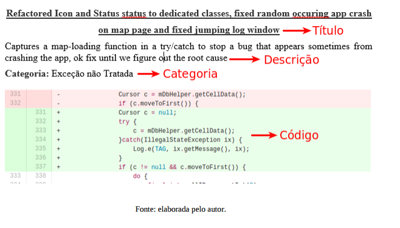
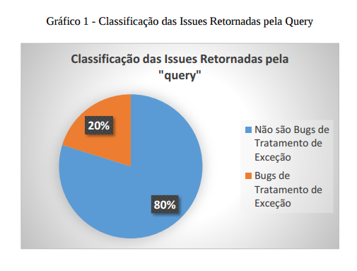

Bugs

Hey, that's not a bug, that's a feature!
- Linus Torvalds- A Mariner 1, foi a primeira nave espacial do Programa Mariner.
- Lançada em 22 de julho de 1962. Sonda para Vênus
- Bug no Cálculo da roda.
- Auto destruição.
- Prejuízo 135 milhões de dolares.
Exceções
Hierarquia de Exceções Java/Android
Checked vs Unchecked
"Checked exceptions are bad because programmers just abuse them by always catching them and dismissing them which leads to problems being hidden and ignored that would otherwise be presented to the user". - Anders Hejlsberg

http://www.artima.com/intv/handcuffs.html
Checked Exceptions are a good idea because although you can ignore them, you have to willfully do it. You can’t accidentally say, “I don’t care.” You have to explicitly say, “I don’t care.” - James Goslin

Tratamento de Exceção
Bug de Tratamento de Exceção

Exceção Não Capturada (Tratada)
Exceções lançadas, e que não foram tratadas

Exceção Não Lançada
Exceções que não foram lançadas quando deveriam

Exceção lançada ou capturada incorreta
Contextualizada como exceção errada sendo lançada ou capturada

Problemas no tratador
Exceções tratadas com erro dentro do corpo do bloco catch

Problema no bloco finally
Problemas ocorridos no bloco de código finally
Android
Desenvolvimento e Aplicação do Trabalho
Estudo Exploratório (Catálogo)
Consolidação

ROCHA, Lincoln S. Tratamento de Exceção em Sistemas Ubíquos: Evolução do
Tratamento e Requisitos Desafiadores. 2011. 10 f. Dissertação (Qualificação Doutorado) -
Ufc, [S. l.], 2011.
BARBOSA, Eiji Adachi Medeiros. Sistema de Recomendação para Código de Tratamento
de Exceções. 2012. 125 f. Dissertação (Mestrado) - Puc-rio, Rio de Janeiro, 2012.
EBERT, F. CASTOR, F. A Study on Developer’s Perception about Exception Handling
Bugs. Universidade Federal de Pernambuco – UFP. Pernambuco, 2013.
FILHO, F. C., GARCIA, A., RUBIRA, C. M. Error Handling as an Aspect. In: Proceedings
of the 2nd Workshop on Best Practices in Applying Aspect-Oriented Software Development
(BPAOSD'07), Vancouver, ACM, 2007. ISBN: 978-1-59593-662-2
doi>10.1145/1229485.1229486.
JONATHAN, M. Exceções em Java. Universidade Federal do Rio de Janeiro – UFRJ. Rio de
Janeiro, 2011.
LECHETA, R. Google Android - aprenda a criar aplicações para dispositivos móveis
com o android SDK – 2 ed – São Paulo. Novatec Editora, 2010.
LIGUORI, R. Java 7 – Pocket Guide – 2 ed – Sebastopol (Califórnia). O'Reilly Media, 2013.
LOPES, R. Tratamento de Erros com Exceções. Universidade Federal de Campina Grande
– Laboratório de Sistemas Distribuídos 2009. Disponível em:
. Acesso em: 22 out. 2013.
RICARDO, L. Google Android – Aprenda a Criar Aplicações para Dispositivos Móveis
Com o Android SDK – 4 ed - Novatec, 2015.
RICARTE, M. Programação Orientada a Objetos - Uma Abordagem com Java. 2001
Universidade Estadual de Campinas - Departamento de Engenharia de Computação e
Automação Industrial. Faculdade de Engenharia Elétrica e de Computação.
ROBERT, A. Exception Handling - FSU Department of Computer Science, 2000.
37
SANTOS, M. Estendendo a Ferramenta SAFE para JBOSS AOP. Rio de Janeiro, 2010.
147p. Dissertação de Mestrado – Departamento de Informática, Pontifícia. Universidade
Católica do Rio de Janeiro.
SIERRA, K. Certificação Sun para Programador Java 6. Alta Books, 2008.
SOMMERVILLE, I. Engenharia de Software. Pearson Education, 9ª edição – 2011.
TABORDA, S. Exceções Conceitos. 2007. Disponível em: